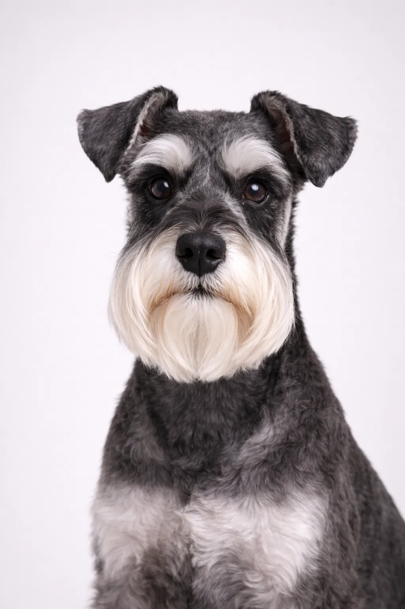

Miniature Schnauzer
With its friendly, smart doğası, the Miniature Schnauzer is a beloved breed for good reason.
12-14 in
11-20 lbs
Irk Değerlendirmeleri
Mizaç
Genel Bakış
Miniature Schnauzers, belirgin bıyıklarıyla öne çıkan arkadaş canlısı ve zeki köpeklerdir. Üç Schnauzer boyutu arasında en popüler olanıdır ve mükemmel aile dostu köpeklerdir.
Mizaç
Miniature Schnauzer, arkadaş canlısı, zeki ve itaatkâr olmasıyla bilinir. Çocuklarla mükemmel uyum sağlar ve harika bir aile köpeği olur. Zekası ve eğitimden zevk alması, eğitimi keyifli kılar. Erken sosyalleşme, dengeli bir arkadaş olmalarına yardımcı olur.
Sağlık
12-15 yıl yaşam süresiyle genel olarak sağlıklı bir ırktır. Patellar lüksasyon, diş sorunları ve deri rahatsızlıkları yaygın endişeler arasındadır. Düzenli veteriner kontrolleri ve önleyici bakım önemlidir. Sağlıklı bir kilo korumak birçok sağlık sorununu önlemeye yardımcı olur.
Egzersiz
Günlük en az bir saatlik yoğun egzersiz gerektiren yüksek enerjili bir ırktır. Açık hava aktivitelerinden zevk alan aktif ailelerle birlikte yaşamaktan mutluluk duyar. Eğitim ve bulmaca oyunları aracılığıyla zihinsel uyarım da en az egzersiz kadar önemlidir. Yeterli egzersiz yapılmadığında davranış sorunları gelişebilir.
Bu Irk Size Uygun mu?
En Uygun
- Daire sakinleri
- Alerji hastaları
- Çocuklu aileler
- Küçük bir bekçi köpek isteyen kişiler
- Aktif yaşlılar
İdeal Değil
- Havlamadan rahatsız olanlar
- Minimum bakım isteyenler
- Çok sakin köpek tercih edenler
Değerlendirmemiz: Arkadaş canlısı, zeki ve alerjik tepkiye neden olmayan bir ırk. Mini Schnauzer'lar harika daire köpekleri ve aile dostlarıdır. Düzenli tımar gerektirirler ve havlamaya meyilli olabilirler; ancak sadık ve eğlenceli köpeklerdir.